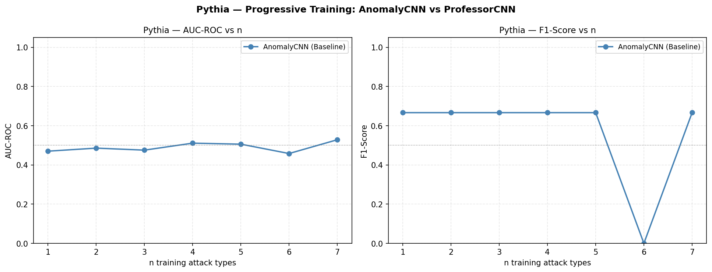
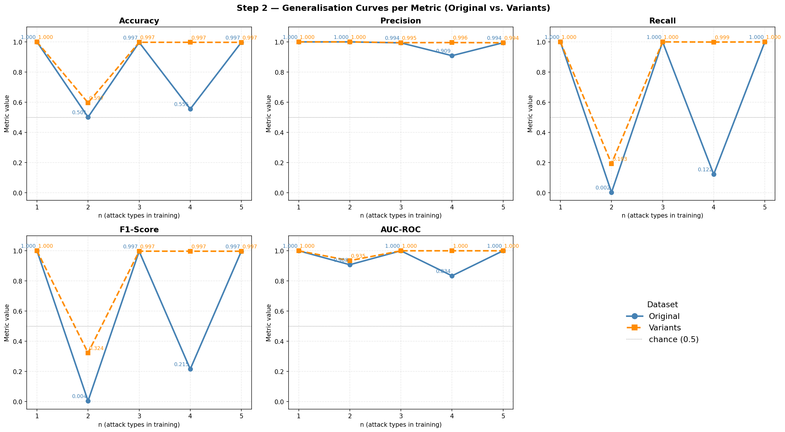
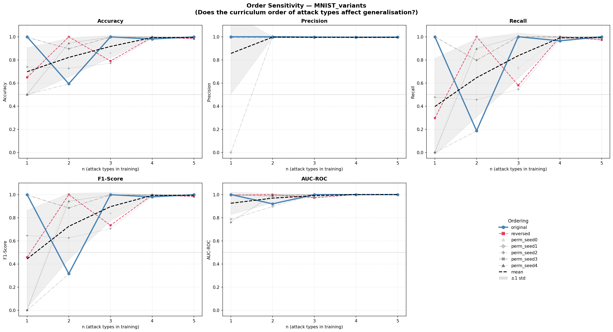

SecurityML CH2 · Datasets: MNIST & Pythia · Scripts: step2.py + step2_professor.py · 2 June 2026
Step 2 extends the closed-world baseline (Step 1) into an open-world setting: can a model trained on n known attack types detect an unseen attack type n+1?
The experiment has two components, run by two separate scripts:
step2.py — AnomalyCNN BaselineProgressive multi-attack curriculum training using the standard AnomalyCNN architecture (3 conv layers, max-pool, binary output). Tests on both MNIST (6 attacks) and Pythia (8 attacks). Includes order-sensitivity analysis and MNIST variant robustness checks.
Seed: RANDOM_SEED = 42 · NUM_PERMUTATIONS = 4
step2_professor.py — ProfessorCNN Suite MAIN DELIVERABLEProfessorCNN-based reproducibility suite for Pythia. Directly addresses Prof. Tałataj's request: systematically compare different attack selection strategies. Adds seeded repeats, full training sets, and a pairwise protocol.
Seed: BASE_SEED = 2137 · RUN_REPEATS = 5
The central research question, as stated by Prof. Tałataj:
Protocol: At round n, the model is trained from scratch on:
Then evaluated on clean_test ∪ Aₙ₊₁ (the next unseen attack). AnomalyCNN hyperparameters: 15 epochs, patience=3, batch=64, BCELoss, Adam.
| Round n | Training attacks | Test attack | Accuracy | Precision | Recall | F1 | AUC-ROC | Assessment |
|---|---|---|---|---|---|---|---|---|
| 1 | A1_gaussian | A2_salt_pepper | 1.000 | 1.000 | 1.000 | 1.000 | 1.000 | ✓ Perfect |
| 2 | +A2_salt_pepper | A3_geometric | 0.501 | 1.000 | 0.002 | 0.004 | 0.908 | Threshold miss |
| 3 | +A3_geometric | A4_blended | 0.997 | 0.994 | 1.000 | 0.997 | 1.000 | ✓ Near-perfect |
| 4 | +A4_blended | A5_backdoor | 0.555 | 0.909 | 0.122 | 0.215 | 0.834 | Hard attack |
| 5 | +A5_backdoor | A6_ood | 0.997 | 0.994 | 1.000 | 0.997 | 1.000 | ✓ Near-perfect |

| n | Training attacks | Test attack | Recall | Precision | F1 | AUC-ROC | Diagnosis |
|---|---|---|---|---|---|---|---|
| 1 | attack_a | attack_b | 1.000 | 0.500 | 0.667 | 0.470 | Always-attack mode |
| 2 | +attack_b | attack_c | 1.000 | 0.500 | 0.667 | 0.486 | Always-attack mode |
| 3 | +attack_c | attack_d | 1.000 | 0.500 | 0.667 | 0.475 | Always-attack mode |
| 4 | +attack_d | attack_e | 1.000 | 0.500 | 0.667 | 0.511 | Always-attack mode |
| 5 | +attack_e | attack_f | 1.000 | 0.500 | 0.667 | 0.506 | Always-attack mode |
| 6 | +attack_f | attack_g | 0.000 | — | 0.000 | 0.458 | ⚠ Always-clean mode |
| 7 | +attack_g | attack_h | 1.000 | 0.500 | 0.667 | 0.528 | Always-attack mode |


The key finding from order sensitivity: on MNIST, specific orderings matter — e.g., training on Blended first and testing on OOD second works far better than the reverse, because Blended introduces useful texture features. On Pythia, ordering is irrelevant because no ordering can create a useful feature representation with this architecture.


After the AnomalyCNN baseline produced uniformly random results on Pythia, we introduced ProfessorCNN — the architecture selected via hyperparameter grid search (step_professor_search.py, results in faza_professor_cnn_search.json).
ProfessorCNN is the best architecture found by the grid search over channel widths, kernel sizes, depth, dropout rates, and learning rates. Compared to AnomalyCNN:
The longer training (200 epochs vs. 15) and AUC-monitored early stopping are critical — AnomalyCNN's 15-epoch cap was likely causing premature convergence to the degenerate solutions. ProfessorCNN has more capacity to potentially find the subtle Pythia signal.
balanced_attack_subset() cut training data to match clean set size (1:1 ratio), leaving only ~100–150 attack samples — far too few for ProfessorCNN's parameter count.step2_professor.py.
Four concrete improvements were implemented to make the ProfessorCNN experiment reliable and fair:
set_global_seed(seed) seeds Python random, NumPy, PyTorch CPU/CUDA, and sets cudnn.deterministic=True. Every experiment can be exactly reproduced by re-running with the same seed.
RUN_REPEATS = 5 with seeds BASE_SEED + 0..4 per subset. Results reported as mean ± std. This quantifies variance and ensures a single lucky/unlucky init doesn't dominate the result.
Removed the balanced_attack_subset() downsampling. ProfessorCNN uses all available attack samples (≈640 per attack after 80/20 split). This gives the model a fighting chance to learn the signal.
Step 1-style: for each of 56 ordered pairs (train on X, test on Y, X≠Y), 5 repeats each. Directly comparable to Step 1 methodology. Total: 280 training runs.
BASE_SEED = 2137 RUN_REPEATS = 5 TRAIN_EPOCHS = 200 TRAIN_PATIENCE = 20 BATCH_SIZE = 64 Monitor = AUC-ROC
Nine training subsets were defined, spanning different sizes and diversity patterns. For each subset, ProfessorCNN was trained on clean ∪ (all samples from selected attacks) and evaluated on all remaining unseen attacks. Each subset ran 5 times with consecutive seeds.
| # | Label | Training attacks | n attacks | Strategy | Unseen attacks evaluated on |
|---|---|---|---|---|---|
| 1 | A only | attack_a | 1 | Single | b, c, d, e, f, g, h (7 attacks) |
| 2 | A+B (seq) | attack_a, attack_b | 2 | Sequential | c, d, e, f, g, h (6 attacks) |
| 3 | A+B+C (seq) | attack_a, b, c | 3 | Sequential | d, e, f, g, h (5 attacks) |
| 4 | A+B+E (diverse) ★ | attack_a, b, e | 3 | Diverse — prof. suggestion | c, d, f, g, h (5 attacks) |
| 5 | A+D+G (spread) | attack_a, d, g | 3 | Spread (every 3rd) | b, c, e, f, h (5 attacks) |
| 6 | A+B+C+D (seq) | attack_a, b, c, d | 4 | Sequential | e, f, g, h (4 attacks) |
| 7 | A+B+E+G (div) | attack_a, b, e, g | 4 | Diverse | c, d, f, h (4 attacks) |
| 8 | A+C+E+G (alt) | attack_a, c, e, g | 4 | Alternating | b, d, f, h (4 attacks) |
| 9 | A–F (majority) | attack_a…f | 6 | Majority | g, h (2 attacks) |
★ Professor's example from class.

| Subset | n | Strategy | Mean AUC ± Std | Mean F1 | Std F1 | Unseen attacks | Verdict |
|---|---|---|---|---|---|---|---|
| A only | 1 | Single | 0.498 ± 0.010 | 0.267 | 0.327 | b,c,d,e,f,g,h | Random + unstable |
| A+B (seq) | 2 | Sequential | 0.482 ± 0.013 | 0.667 | 0.000 | c,d,e,f,g,h | Always-attack (locked) |
| A+B+C (seq) | 3 | Sequential | 0.491 ± 0.016 | 0.667 | 0.000 | d,e,f,g,h | Always-attack (locked) |
| A+B+E (diverse) ★ | 3 | Diverse | 0.490 ± 0.023 | 0.667 | 0.000 | c,d,f,g,h | Always-attack (locked) |
| A+D+G (spread) | 3 | Spread | 0.496 ± 0.010 | 0.667 | 0.000 | b,c,e,f,h | Always-attack (locked) |
| A+B+C+D (seq) | 4 | Sequential | 0.483 ± 0.017 | 0.667 | 0.000 | e,f,g,h | Always-attack (locked) |
| A+B+E+G (div) | 4 | Diverse | 0.492 ± 0.029 | 0.667 | 0.000 | c,d,f,h | Always-attack (locked) |
| A+C+E+G (alt) | 4 | Alternating | 0.510 ± 0.025 | 0.667 | 0.000 | b,d,f,h | Always-attack (locked) |
| A–F (majority) | 6 | Majority | 0.481 ± 0.015 | 0.667 | 0.000 | g,h | Always-attack (locked) |
| A only (n=1) | 0.498 | ±0.010 | |
| A+B (n=2) | 0.482 | ±0.013 | |
| A+B+C (n=3) | 0.491 | ±0.016 | |
| A+B+E ★ (n=3) | 0.490 | ±0.023 | |
| A+D+G (n=3) | 0.496 | ±0.010 | |
| A+B+C+D (n=4) | 0.483 | ±0.017 | |
| A+B+E+G (n=4) | 0.492 | ±0.029 | |
| A+C+E+G (n=4) | 0.510 | ±0.025 | |
| A–F (n=6) | 0.481 | ±0.015 | |
| — Random baseline — | 0.500 |
The professor specifically mentioned A only vs. A+B+E as an example comparison. Here is the detailed breakdown for both:
Mean AUC = 0.498 ± 0.010
Training set: clean + all attack_a samples (~640)
Unseen: b, c, d, e, f, g, h
| Unseen attack | AUC mean | AUC std |
|---|---|---|
| attack_b | 0.519 | 0.025 |
| attack_c | 0.482 | 0.020 |
| attack_d | 0.495 | 0.029 |
| attack_e | 0.494 | 0.016 |
| attack_f | 0.507 | 0.018 |
| attack_g | 0.487 | 0.016 |
| attack_h | 0.499 | 0.013 |
Mean AUC = 0.490 ± 0.023
Training set: clean + attack_a + attack_b + attack_e (~1920 attack samples total)
Unseen: c, d, f, g, h
| Unseen attack | AUC mean | AUC std |
|---|---|---|
| attack_c | 0.489 | 0.035 |
| attack_d | 0.470 | 0.018 |
| attack_f | 0.521 | 0.031 |
| attack_g | 0.467 | 0.024 |
| attack_h | 0.505 | 0.026 |
To rigorously test ProfessorCNN's generalisation, every ordered pair (train on X → test on Y, for all X ≠ Y) was evaluated with 5 seeds. This mirrors the Step 1 methodology and creates a complete cross-attack generalisation map.
Total runs: 8 × 7 = 56 pairs × 5 seeds = 280 training runs. Each uses full attack partition (≈640 samples), 200 epochs, patience 20, AUC-monitored.

| Train attack | Test attack | Mean AUC | Std AUC | Mean F1 | Std F1 |
|---|---|---|---|---|---|
| attack_a | attack_b | 0.513 | 0.020 | 0.533 | 0.267 |
| attack_a | attack_c | 0.452 | 0.024 | 0.413 | 0.311 |
| attack_a | attack_d | 0.452 | 0.012 | 0.362 | 0.304 |
| attack_a | attack_e | 0.497 | 0.026 | 0.391 | 0.319 |
| attack_a | attack_f | 0.511 | 0.026 | 0.667 | 0.000 |
| attack_a | attack_g | 0.480 | 0.041 | 0.266 | 0.326 |
| attack_a | attack_h | 0.484 | 0.012 | 0.133 | 0.267 |
| attack_b | attack_a | 0.522 | — | 0.400 | — |
A diagnostic ceiling analysis using logistic regression on raw pixel features (_ceiling.py) showed AUC = 0.845. The attack signal is present in the pixel values — it is just very localised. CNN with spatial max-pooling aggregates over spatial locations, destroying exactly the local perturbation information that Pythia attacks encode.
With only ~640 clean and ~640 attack samples per training run, and a model with 100K–300K parameters, ProfessorCNN finds two pathological optima that minimise binary cross-entropy without learning the signal:
The fact that n=1 (A only) has F1 std = 0.33 (randomly flips between modes) while n≥2 has F1 std ≈ 0 (locks into mode A) suggests: the larger multi-attack training set consistently drives the model to Mode A — but adding diversity does not break out of it.
| Property | MNIST attacks | Pythia attacks |
|---|---|---|
| Perturbation type | Global (affects every pixel) | Local (small spatial footprint) |
| Perturbation magnitude | High (Gaussian σ≈0.1–0.3, visible noise) | Subtle (max |Δ| ≈ 0.068) |
| Signal after max-pool | Preserved (global → survives pooling) | Destroyed (local → pooled away) |
| Clean/attack separability | Very high (oracle AUC → 1.0) | Moderate (oracle LR AUC = 0.845) |
| Attack-to-attack variance | High (A1=noise, A5=backdoor, A6=OOD) | Low (all attacks are pixel-level perturbations) |
Script: step2.py (RANDOM_SEED=42) + step2_professor.py (BASE_SEED=2137, RUN_REPEATS=5) ·
Data: faza2_wyniki_generalizacji.json + faza2_wyniki_generalizacji_professor.json ·
Generated: 2 June 2026